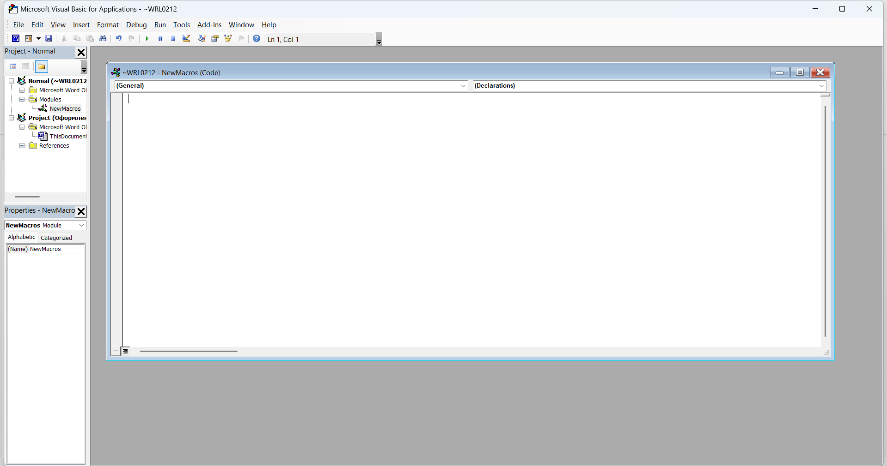
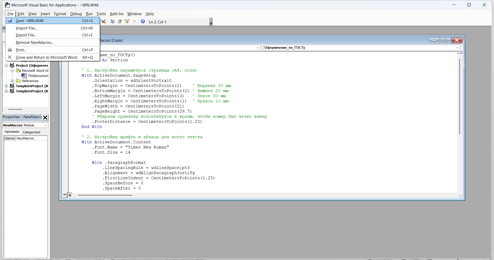
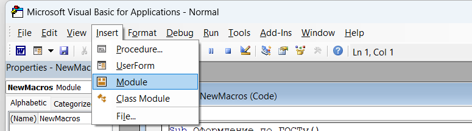
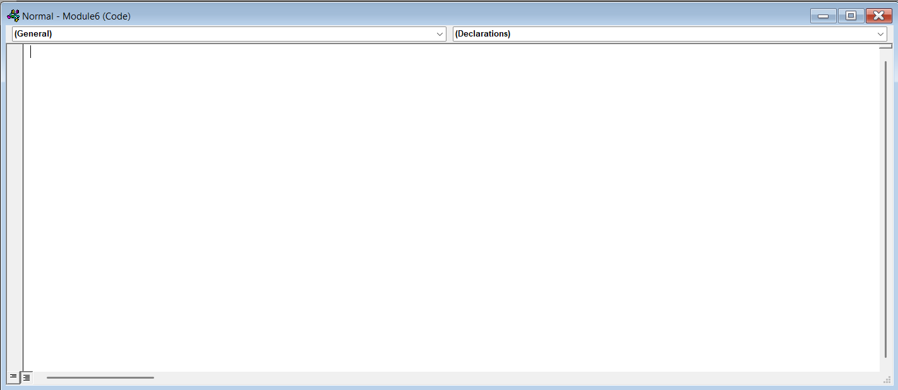
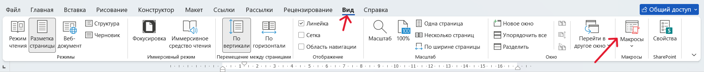
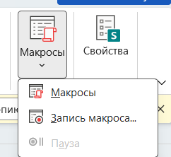
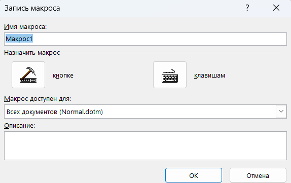
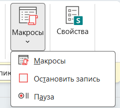
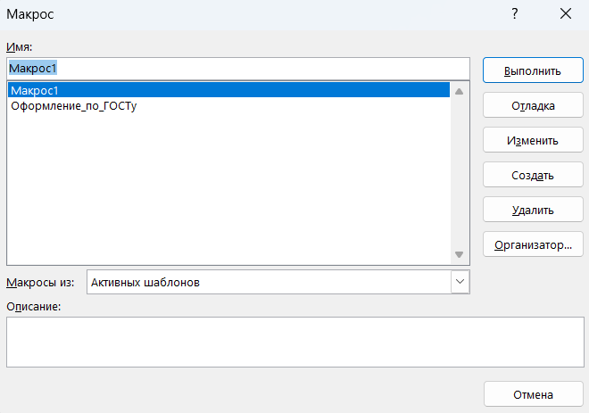
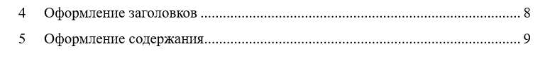

Работа с оформлением файла через макросы в Word
В данном разделе рассматриваются способы подготовки Word к работе с макросами, их добавление и самостоятельная запись для автоматизации оформления документов.
Подготовка перед использованием макросов
Прожмите комбинацию клавиш Alt + F11. После этого откроется диалоговое окно редактора макросов.

В открывшееся окно вставьте необходимый код макроса и сохраните изменения.

Чтобы добавить ещё один макрос, в этом же диалоговом окне сверху выберите пункт Insert, затем нажмите Module.

Если действия выполнены правильно, откроется новое окно модуля. В него необходимо вставить нужный код.
При необходимости добавления новых макросов повторите действия, указанные в предыдущем шаге.

Самостоятельная запись макросов
Макросы можно записывать самостоятельно, используя встроенные возможности Microsoft Word. Для этого необходимо выполнить следующие действия.
Откройте на верхней панели вкладку «Вид», затем выберите «Макросы». Во втором случае необходимо нажать именно на надпись снизу, а не на значок макроса.

В появившемся окне нажмите кнопку «Запись макроса…».

Далее введите любое имя макроса и нажмите «ОК».

После этого начнётся запись макроса. На данном этапе вручную выполните необходимое оформление документа, которое вы хотите автоматизировать.
После завершения оформления документа необходимо остановить запись макроса. Для этого нажмите на ту же кнопку, которая использовалась в первом пункте.

Чтобы выполнить записанный макрос, нажмите на значок макроса, выберите нужный макрос из списка и нажмите кнопку «Выполнить».

Оформление таблиц
Для оформления таблиц в документе можно использовать отдельный макрос. Для этого необходимо вставить в окно редактора следующий код и сохранить его.
Для того чтобы оформить таблицу, необходимо сначала создать её вручную и добавить в неё текстовое содержимое.
Фактически данный макрос не создаёт таблицу автоматически, а применяет к уже существующей таблице единое текстовое оформление.
Таким образом, данный код позволяет быстро привести текст внутри таблиц к единому стилю, что особенно удобно при оформлении учебных и научных документов.
Добавление нумерации
Для автоматического добавления нумерации страниц можно использовать отдельный макрос. Для этого необходимо вставить в окно редактора следующий код и сохранить его.
Данный макрос добавляет нумерацию страниц, начиная с первой страницы документа.
После запуска макроса номер страницы будет автоматически размещён в нижней части страницы по центру и оформлен шрифтом Times New Roman размером 14.
Такой способ удобен для быстрого добавления базовой нумерации без ручной настройки колонтитулов.
Оформление заголовков
Для оформления заголовков в документе можно использовать отдельный макрос. Для этого необходимо вставить следующий код в окно редактора и сохранить его.
Чтобы воспользоваться данным кодом, необходимо сначала выделить нужный заголовок в документе.
После этого нужно открыть список доступных макросов и выбрать соответствующий макрос для оформления заголовка.
После выполнения макроса заголовок будет выровнен по левому краю, оформлен шрифтом Times New Roman, размером 14 и полужирным начертанием.
Оформление содержания
Для автоматического создания содержания в документе можно использовать отдельный макрос. Для этого необходимо вставить следующий код и сохранить его.
Данный код используется после применения макроса из предыдущего пункта, предназначенного для оформления заголовков.
Чтобы создать содержание, необходимо установить курсор на пустую строку в том месте документа, где должно располагаться содержание.
После этого нужно запустить соответствующий макрос, и Word автоматически сформирует содержание на основе оформленных заголовков.
